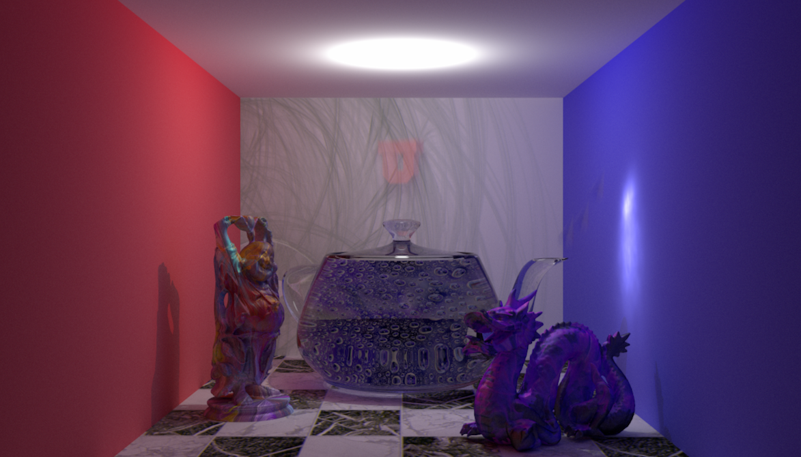

CS6620 Project 14 - Final Project
Teapot Rendering Competition
For the final project, I implemented quite a few additional features like animation, motion blur, animating caustic maps and a physically correct renderer. The scene showcases a glass Utah Teapot (model courtesy Laura Lediaev) with water crystals, animating water bubbles and caustics, multi-colored Stanford Buddha, Stanford Dragon (from the Stanford 3D Scanning Repository) and a U logo (model courtesy Will Usher). Textures are from TextureX.com. While the glass teapot exhibits absorption and Fresnel reflections, the diffuse objects demonstrate global illumination capabilities of the renderer. The image was rendered using path tracing, importance sampling, adaptive stratified sampling and caustic photon map. Animation was captured at a rate of 10 frames per second with about 10,24 samples per pixel with 15 GI bounces. The final image uses Mitchell-Netravali filter for reconstruction.
Final Scene with 1,024 SPP, 15 bounces and 50,000 Caustic photons
Animation of the final scene at 10 frames per second with 1,024 SPP, 15 GI bounces and 50,000 Caustic photons
Hardware Information:
I ran my ray tracer on 8x Xeon(R) CPU E-7-4870 with 160 hyper threads and 4x Xeon E7-8890 v3 with 144 hyper threads for over 36 hours to render the final scene. I modified my raytracer to support distributed rendering that allowed me to use many different compute nodes and render multiple animation frames in parallel.
{kind=link}